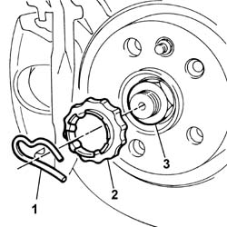
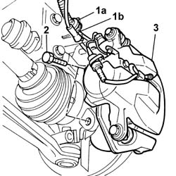
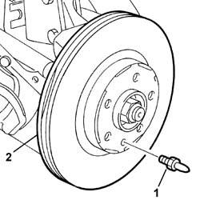
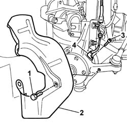
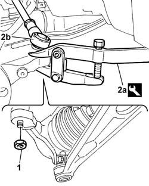
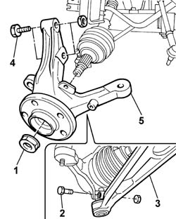

4450C10 FRONT STEERING KNUCKLE (ONE), L/H OR R/H COMPLETE WITH WHEEL HUB - R+R WITH WHEEL REMOVED - CHECK WHEEL GEOMETRY SEPARATELY
- Path
- Procedures > 44 SUSPENSION AND WHEELS > 4450 HUBS AND WHEELS > 4450C FRONT WHEEL HUBS > 4450C10 FRONT STEERING KNUCKLE (ONE), L/H OR R/H COMPLETE WITH WHEEL HUB - R+R WITH WHEEL REMOVED - CHECK WHEEL GEOMETRY SEPARATELY
- Kind
- repair procedure (removal / refitting; the operation number is the code)
- Applies to
- all engines; all production periods
- Interactive page
- https://sloeber94.github.io/elrnDB-fUlss/en/#/179007413
Applies to: all engines; all production periods
 Removing
Removing
 Refitting
RefittingProceed as follows to remove the left front steering knuckle.
Op. 5530B56 BATTERY DRIP TRAY COVER - R.R.
Disconnect the negative battery terminal.
Position the vehicle on a lift.
Op. 4450B02 LEFT FRONT WHEEL - R.R
1. Remove the retaining clip using a suitable tool.
2. Remove the safety clip.
Prevent the rotation of the wheel hub by positioning a suitable tool between the brake caliper and the brake disc.
3. Loosen the nut fixing the wheel hub.

Applies to: all engines; all production periods
1. Release the brake pipe (1a) and the brake pad sensor wiring (1b) from the fastenings on the shock absorber.
2. Undo the retaining bolts.
3. Remove the brake caliper and secure it the vehicle appropriately.

Applies to: all engines; all production periods
1. Undo the retaining bolt.
2. Remove the brake disc.

Applies to: all engines; all production periods
1. Undo the remaining retaining bolt.
2. Remove the brake disc guard.
3. Undo the retaining bolt.
4. Place the ABS sensor at the side.

Applies to: all engines; all production periods
1. Undo the nut.
2. Disconnect the steering rod (2b) using the tool (2a).
Description | Code | Function | |
|---|---|---|---|
2A | Head extractor | Head extraction |

Applies to: all engines; all production periods
1. Undo the wheel hub fixing nut.
2 . Undo the bolt fixing the track control arm to the wheel hub.
3. Disconnect the end of the lower track control arm from the wheel hub.
4. Undo the bolts fixing the wheel hub to the shock absorber.
5. Remove the steering knuckle complete with hub.

Applies to: all engines; all production periods
Proceed in the same way to remove the right front steering knuckle.
Applies to: all engines; all production periods
Refitting
RemovingProceed as follows to refit the left front steering knuckle.
Place the front steering knuckle complete with hub in position.
Tighten the bolts fixing the wheel hub to the shock absorber to the recommended torque.
Value daNm | Fastening | Component | dia | |
|---|---|---|---|---|
. | 9.0 | Bolt | FRONT STEERING KNUCKLE COMPLETE WITH HUB - S |
Connect the lower track wishbone ball joint to the wheel hub.
Tighten the bolt fixing the wheel hub to the lower wishbone to the recommended torque.
Value daNm | Fastening | Component | dia | |
|---|---|---|---|---|
. | 7.0 | Bolt | FRONT STEERING KNUCKLE COMPLETE WITH HUB - S |
Screw in the wheel hub fixing nut without tightening it.
Connect the steering rod and tighten the fixing nut to the recommended torque.
Value daNm | Fastening | Component | dia | |
|---|---|---|---|---|
. | 4.0 | Nut | ADJUSTABLE STEERING LINKS |
Place the ABS sensor in position and tighten the fixing bolt.
Fit the brake disc shield and tighten the retainining bolt.
Fit the brake disc and tighten the retaining bolt to the recommended torque.
Value daNm | Fastening | Component | dia | |
|---|---|---|---|---|
. | 1.5 | Bolt | FRONT BRAKE DISCS |
Place the brake caliper in position and tighten the fixing bolts to the recommended torque.
Value daNm | Fastening | Component | dia | |
|---|---|---|---|---|
. | 16 | Bolt | FRONT BRAKE CALIPER |
Secure the brake pipe and the brake pad sensor wiring to the fastenings on the shock absorber.
Prevent the rotation of the wheel hub by positioning a suitable tool between the brake caliper and the brake disc.
Tighten the wheel hub fixing nut to torque.
Value daNm | Fastening | Component | dia | |
|---|---|---|---|---|
. | 10 | Nut | FRONT STEERING KNUCKLE COMPLETE WITH HUB - S |
Position the safety clip.
Fit the retaining clip.
Op. 4450B02 LEFT FRONT WHEEL - R.R
Remove the vehicle from the lift.
Connect the negative battery terminal.
Op. 5530B56 BATTERY DRIP TRAY COVER - R.R.
Op. 4450A10 FRONT WHEEL GEOMETRY - CHECK USING OPTICAL EQUIPMENT - INCLUDES ADJUSTMENT IF NECESSARY
Proceed in the same way to refit the right front steering knuckle.
Topics linked from this page (3)
- 4450A10 FRONT WHEEL GEOMETRY - CHECK USING OPTICAL EQUIPMENT - INCLUDES ADJUSTMENT IF NECESSARY
- 4450B02 LEFT FRONT WHEEL R R
- 5530B56 BATTERY DRIP TRAY COVER - R.R.